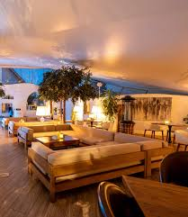

AMENITIES

The Guru lounge is a whole world in itself, wrapped in daily West African life,
and thought interwoven with community.
The variety of drinks and beverages available at
Guru lounge Lavington or Guru lounge Waterfront are unique tapestries of the world.
Take a walk with top shelf spirits,
liqueurs and chasers.
Journey around the world with Guru's on trend,
adventurous and extensive selection of wines.
Arrive at a warm sandy beach with a chilled cocktail.
The Guru lounge is the perfect antidote to the realities of the world.
Revered as a fine watering hole for
those who dwell near or far, the lounge is
decorated with framed photos that make you feel like you just stepped out of a scrapbook of a bustling West African city.
The vibe ranges from alcohol-nerd symposium to sports-central bar,
depending on the time of day/night and if there’s a
LIVE game playing on the large TV screen.
The Guru lounge embodies the spirit of family and community,
so however your day or week went, wherever the evening may take you,
your experience at the lounge is memorable and pleasurable.
.jpg)
Bolo Lavington Garden
Bolo Lavington opens up to a terrace and lush
green garden that forms the perfect backdrop for al fresco dining or hosting a special occasion.
The beautiful and spacious lawn is surrounded by trees to
give you a taste of nature in its purest form.
Mother nature shows off her flourishing flora and fauna against the chirping of birds and
delicious scents of mama’s cooking.
Truly a treat for your senses, the garden is perfect for friends or family to enjoy
a sundowner or for a doting couple to have a quiet and intimate dinner.
Make a reservation or host a special event at Bolo Lavington.
SERVICES
.jpg)
Catering
For over half a decade and counting, Bolo has been catering Kenya’s events of all shapes and sizes, to the delight of our many clients. Widely regarded as the best caterers for authentic West African dishes, Bolo strives to create rich experiences through inspired West African cuisine and impeccable service.
Our expertise and drive to create the perfect menu for each event places Bolo at the pinnacle of West African caterers in Kenya, a distinction we maintain with pride and a tireless focus on the needs of our clients.
Whether big or small, your event catering will benefit from our authenticity and passion for West African delicacies. Bolo’s catering specialties include:
Wedding Event Catering
Corporate Event Catering
Private (Family or friends) Event Catering
Birthday Event Catering
Baby and Bridal Showers Event Catering
Plus so much more!
Bolo’s dedicated catering specialists are ready to answer any questions and oversee every aspect of planning, budgeting and personalizing in order to execute every catered event to perfection.
Any dietary or allergy-related needs will be identified during the custom-menu selection process, and expert catering staff will always be available, to address any and all inquiries.